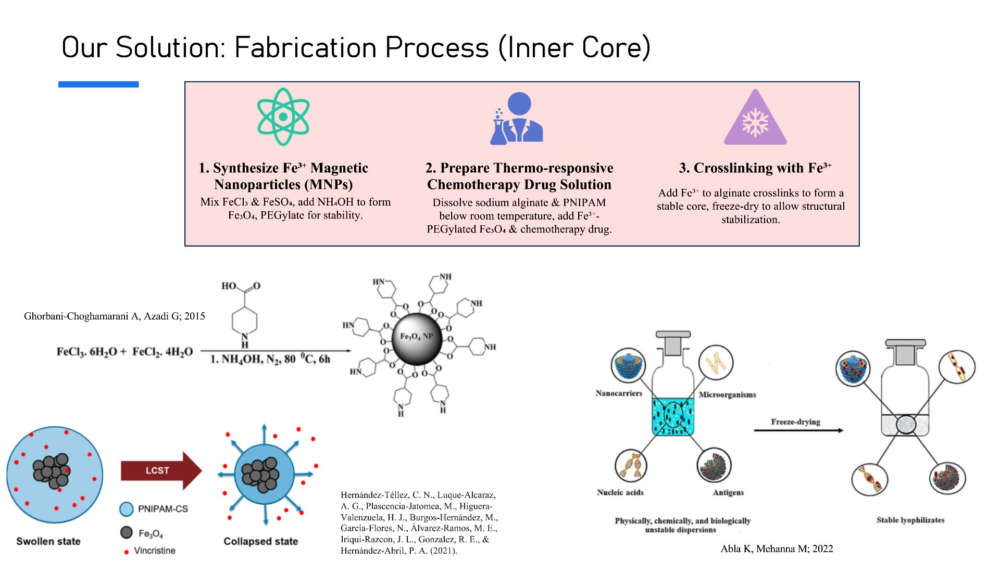
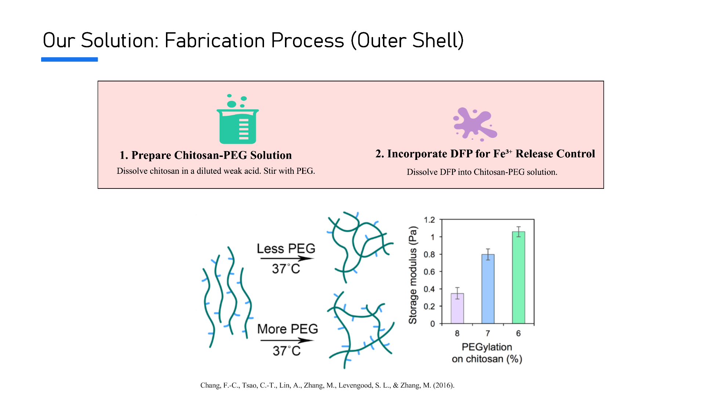
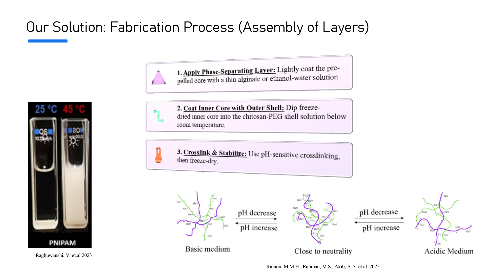
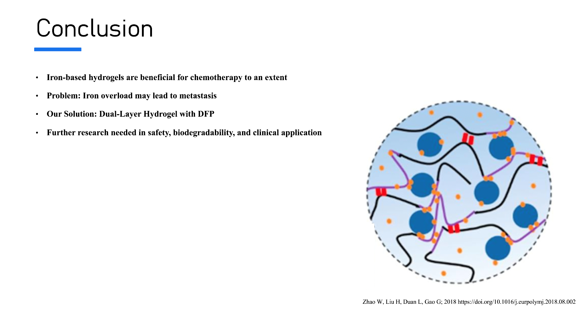

Our Take on the Paper: Enhanced Postoperative Cancer Therapy by Iron-Based Hydrogels
A theoretical research-gap analysis exploring how iron release might be better controlled in magnetic hydrogels for postoperative cancer therapy. No experiments were conducted.
Project Overview
The goal of this project is to pick a research article and identify a research gap in which we can theoretically challenge and modify with our own solution to the problem.
For our article, my partner and I looked at a study on the application of iron-based hydrogels in different contexts of postoperative tumour therapy, including chemotherapy and photodynamic therapy.
According to the paper, iron-based hydrogel is a safer, more bioavailable and less toxic alternative compared to existing methods to combatting metastasis and inhibiting cancer recurrence post-surgery.
What I looked at with my partner is a limitation we pointed out in the concept of iron-based hydrogels, and our exploration of how to better improve the control over the release of iron into the infection site.
This project is purely theoretical and no experiments were conducted.
What the Paper Says
The paper claims that the combination of iron and hydrogels is beneficial because of the two main components used.
Hydrogels
- 3D structure.
- Crosslinks that can easily hold onto metals like iron.
- Good response to both internal (ROS, enzyme, pH, glucose) and external stimuli (heat, light, electric, magnetic).
- Hydrogels are already being used as adjuvants to yield better control-release of drug delivery in general.
Iron
- Paramagnetic properties (weakly attracted to a magnetic field), so treatment can be manipulated with directional intent.
- Photothermal properties in which the hydrogel can detect a stimulus.
- Ferrous iron (Fe2+; with a reducing agent, Fe3+ reduces to ferrous iron) can trigger Fenton reactions in the presence of hydrogen peroxide.
- These reactions produce highly reactive hydroxyl radicals (ROS; reactive oxygen species), which can damage cell membranes, proteins and DNA.
Magnetic Supramolecular Hydrogels
This iron-based hydrogel in particular is an MSH (Magnetic Supramolecular Hydrogel), which is a smart, water-swollen polymer network formed through reversible, non-covalent physical interactions and embedded with magnetic particles.
The magnetic particle in this case is iron, as iron exhibits paramagnetic properties and can weakly respond to an external magnetic field.
The coordination bonds formed within the MSH are between ferric iron (Fe3+) and the drug to be released, in which the drug molecules are held within the hydrogel network.
Once exposed to an external magnetic field, the stimulus-responsive properties of this MSH generate localized heating in the region, where the bonds can break and the drug gets released into the infection site.
With MSH, there exists magneto-responsiveness where the gel can move or change shape and generate localized heat when exposed to an external magnetic field — in this case, an alternating current magnetic field (ACMF).
The stimulus responsiveness of MSH extends beyond magnetic fields to other stimuli like light, pH, electricity and temperature changes, which can alter the internal network and viscoelasticity (stiffness and flow behaviour).
Our Response: Double-check the Iron
Iron is used at the post-surgery site for this application. However, would the iron itself cause additional risks if the coordination bond within the hydrogel network is not enough? Could it potentially undermine the intended inhibition of cancer recurrence?
We checked a paper published in 2024: Iron and cancer: overview of the evidence from population-based studies .
The paper discusses the potential cancer-related risks associated with excess cellular iron and the production of free radicals.

Therefore, for the initial study we looked at, we decided to see if there is a way to control the amount of iron being injected at the postoperative site to prevent iron overload.
The hydrogel network already helps in promoting the Fenton reaction to produce hydroxyl radicals and other ROS. However, we wanted to investigate a way to better control iron release and potentially improve the stability of the hydrogel system.
Our concept focused on a dual-layer hydrogel with the incorporation of deferiprone (DFP), an iron chelator that has been shown to reduce ferritin levels in patients studied in the context of thalassemia treatment.
Our Solution



